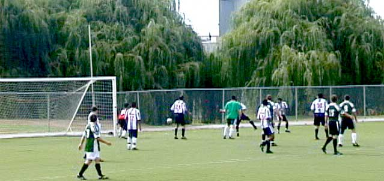
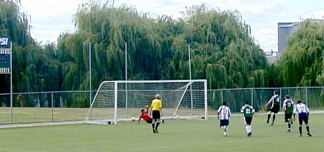
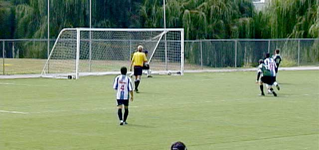
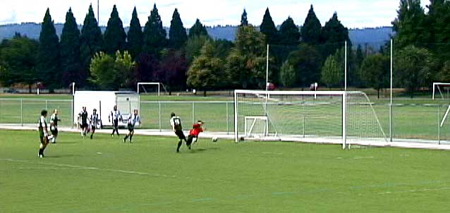
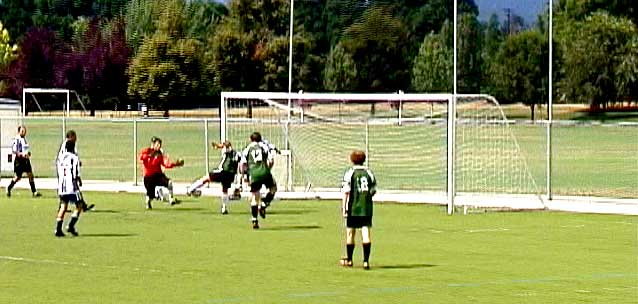
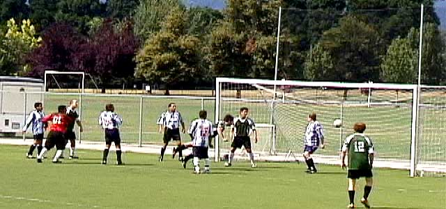
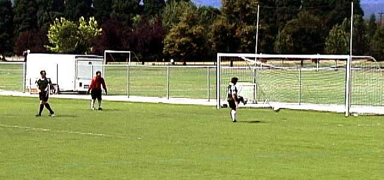

August 7th, 2004, FC77 Saxer [now FC77 Bollocks] played FC Alianza for the Championship of the 4th Division Open group. The two teams had finished as 1 and 2 in the standings for this Spring/Summer session.
Match start was at 10 am, and the day was mild and sunny. Saxer scored their first goal early in the first half. A few minutes later, an Alianza defender made a reckless challenge on a Saxer attacker while in the Alianza penalty area. This resulted in the player receiving a red card and Saxer awarded a penalty kick - which they converted. While still in the first half, Saxer received another penalty kick. The score was now 3 - 0.
Being a man down and behind 3 - 0, Alianza had to gamble on covering defensively as they pressed forward to score. This ultimately proved fatal to any chance for a comeback. In the second half, Saxer scored five more goals. The final score was FC77 Saxer 8, FC Alianza 0.






Final
